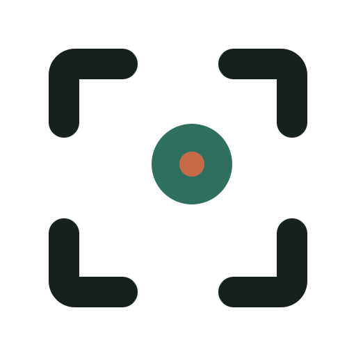
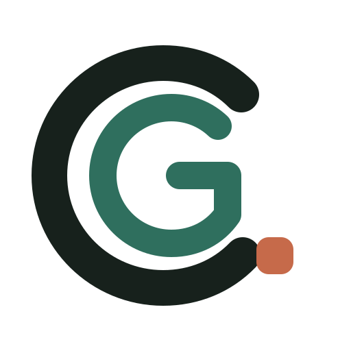
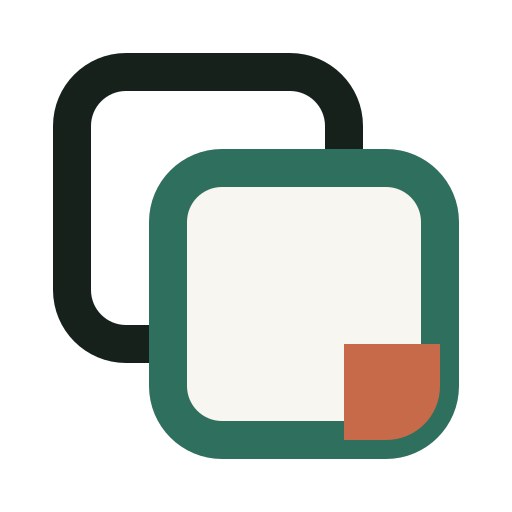
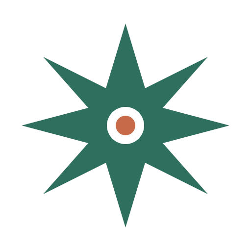
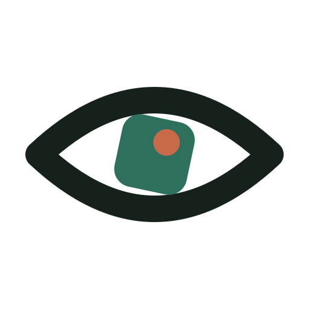

Первый раунд: только символы. Каждый должен работать как иконка, аватар и маленькая подпись на фотографии.

Тренировка внимания и поиск необычной точки в обычном кадре.

Собственный монограммный знак — компактнее и более брендово.

Кадр как упражнение: повторяешь, сдвигаешься, видишь иначе.

Короткий момент появления идеи — смелее и энергичнее остальных.

Наблюдательность как навык; самый прямой образ продукта.